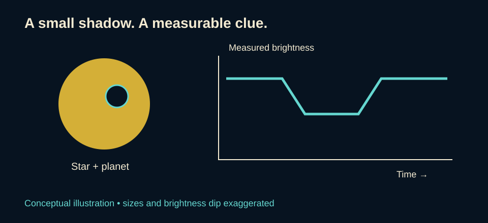
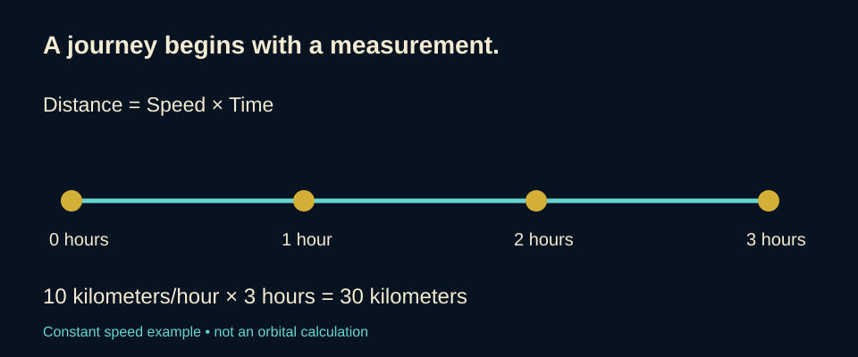

Explore and Learn · Space
From Looking Up to Reaching Beyond Earth
From the patterns in our night sky to the mathematics behind a mission, curiosity gives us a place to begin.
Find an article
Search a title, browse a subject, or revisit articles by the date they were added. Dates below refer to this preview, not live publication.
The sky is a viewpointScience ·
Finding a world through a tiny changeScience ·
How a telescope turns light into informationTechnology ·
Reaching beyond the Sun’s bubbleEngineering ·
Turning telescope data into musicArts ·
Katherine Johnson: mathematics with a destinationMathematics ·
Distance without a frightening formulaMathematics ·
A sky full of questions
Look up on a clear night. Which lights are nearby, and which are unimaginably distant? What can a pattern tell us? How could anyone work out a route through space?
Space exploration connects those questions. Observation supplies evidence, mathematics helps interpret it, and engineering turns a proposed journey into equipment that can make it. We can begin understanding that connection without first becoming experts.
Science
The sky is a viewpoint
A constellation can look like a picture, but its apparent pattern does not mean all its stars sit together at the same distance. Our view compresses depth into a scene on the sky. Cultures have given star patterns different names and meanings; no single interpretation represents every community. Modern astronomy recognizes 88 constellations. Source
Our place on Earth and the season also affect what we can see. NASA describes how the view changes as Earth travels around the Sun and how observers in different hemispheres see different portions of the sky. Source

Watch Orion turn sideways
NASA’s The True Shape of Orion begins with the familiar view from Earth, then circles around the stars to reveal their three-dimensional distribution. This is a scientific visualization, not footage from a camera traveling between the stars.
Watch the rotating Orion visualization on NASA · Source and video credit
Three belt stars, three distances
These rounded estimates come from NASA’s introductory Orion article. They illustrate depth rather than provide precision measurements; published stellar-distance estimates can differ and be revised. Miles are rounded conversions using approximately 5.88 trillion miles per light-year. Source
| Belt star | Light-years from Earth | Miles from Earth |
|---|---|---|
| Alnitak | 800 | 4.7 quadrillion |
| Mintaka | 900 | 5.3 quadrillion |
| Alnilam | 1,300 | 7.6 quadrillion |
In these estimates, Alnilam is roughly 500 light-years farther from Earth than Alnitak. That difference compares their distances from Earth; it is not their complete separation from each other. Their different directions in the sky also matter when calculating the distance between them.
A pattern and a physical group are different
Think of the Orion photograph as a view from one observing location. It shows where the stars appear in the sky; the picture alone cannot tell you their distances from Earth. Recognizing a pattern is a starting point for investigation, not a measurement of its depth. Source
Finding a world through a tiny change
An exoplanet is a planet outside our solar system. One way to detect one is to observe a transit: a planet passes in front of its star from our viewpoint and blocks a small part of the starlight. Instruments measure the resulting dip in brightness. Source
The discovery is often an interpretation of measurements rather than a photograph showing a planet’s surface. Mathematics helps describe how much the brightness changes. A transit also requires the right viewing alignment; a planet can exist without crossing its star’s face as seen from Earth. Source
Knowing that a planet exists does not establish that life exists there. Those are different questions, requiring different evidence.


Technology
How a telescope turns light into information
A space image begins with light reaching an instrument. Webb’s primary mirror gathers infrared light and sends it toward a secondary mirror, which directs it into the scientific instruments. Different components select and record the light for different kinds of investigation. Source
From light to a measurement
Detectors turn absorbed light into electrical charges. The information can then be stored digitally and transmitted to Earth. Cameras record an image; spectrographs spread light into its wavelengths so researchers can measure brightness across a spectrum. These are complementary ways to study a target. Source
A filter admits a chosen range of wavelengths. A coronagraph blocks a bright star’s light so fainter nearby material can become easier to detect. Webb’s NIRCam and MIRI instruments include coronagraphs. Choosing the instrument and observing mode is part of answering the scientific question. Source
Why are the images colorful?
The HIP 65426 b image in Science uses different visible colors to represent infrared observations. The colors distinguish wavelength bands; they do not show how the scene would look to human eyes. Its white star symbols mark the host star’s removed position. Source
Technology also depends on people who check its results. Katherine Johnson’s verification of computer calculations, described in Mathematics, offers a historical example of that responsibility. Source
Reading an image: Look for the instrument, wavelength, processing explanation, and credit. Those details tell you what kind of evidence you are seeing.
Engineering
Reaching beyond the Sun’s bubble
The Voyager spacecraft crossed the heliopause, the boundary between the Sun’s outward-flowing solar wind and the surrounding interstellar environment. Voyager 1 crossed in 2012 and Voyager 2 in 2018. These were robotic journeys into interstellar space. Source
“Interstellar space” and “outside the entire solar system” are not interchangeable descriptions. NASA explains that the Voyagers can be beyond the heliopause while still far from the solar system’s outer reaches. This distinction keeps a remarkable achievement precise rather than making it sound larger than the evidence supports. Source
Keeping the spacecraft pointed
A spacecraft must do more than reach a distant place. It needs to send useful information home. Voyager’s orientation-control system keeps its high-gain antenna pointed toward Earth. Pointing is therefore part of communication, not simply a matter of where the spacecraft is traveling. Source
A mission with an energy budget
The Voyagers use three radioisotope thermoelectric generators apiece. These systems turn heat from radioactive decay into electricity. NASA explains that, as available electrical power declines, some spacecraft loads must be switched off so demand does not exceed supply. Source
That creates a design tradeoff: an instrument may be scientifically useful but still require power the spacecraft can no longer spare. The engineering challenge is to preserve a useful mission within its remaining resources. This is a general explanation of the constraint, not a claim that every original instrument is still operating. Source
Engineering connection: The antenna, control system, power supply, and instruments work together. A measurement has little value to a reader on Earth if the spacecraft cannot send it back.

A spacecraft you can recognize

A message from Earth: the Golden Record
Each Voyager carries a Golden Record: a 12-inch disc of gold-plated copper, containing sounds and images chosen to represent life and culture on Earth. It is a time capsule intended for a possible distant finder, not evidence that another civilization has received it. Source

What do the markings mean?
The cover is an instruction sheet expressed through diagrams and numbers. The upper-left drawing shows the record and stylus, with playback timing written in binary. The upper-right drawings explain how the recorded signals can be reconstructed into pictures; a test circle helps check the picture’s proportions. Below, a pulsar map identifies the solar system’s location relative to 14 pulsars. A hydrogen-atom diagram provides a physical reference for the time units. These markings describe how the designers hoped a finder could decode the contents. Source
A separate handwritten inscription on the record reads: To the makers of music – all worlds, all times
. It connects this engineering project with music and human culture. Source
Examine NASA’s explanation of each cover marking · View the inscription in JPL’s historical article
A coming milestone: one light-day from Earth
NASA predicts that Voyager 1 will reach one light-day from Earth on Wednesday, November 18, 2026, at 2:16:07 a.m. PST (4:16:07 a.m. Central Standard Time). A light-day is a distance: about 25.9 billion kilometers, or 16.1 billion miles. At that separation, a radio signal takes about 24 hours to travel one way between Earth and the spacecraft. This is a future prediction as of this article’s October 8 review. Source
Arts
Turning telescope data into music
An astronomical image can communicate through color and shape. Sonification offers another route: representing data through sound. Scientists and musicians choose rules that connect features of the data with qualities such as pitch and loudness. Source
Listening to the Cosmic Cliffs
NASA’s Cosmic Cliffs sonification scans a Webb image from left to right. Brighter areas become louder, and vertical position affects pitch. A bright feature high in the picture is represented differently from one lower down. The changing sound helps convey the image’s structure. Source
These are composed representations of observations, not sounds that a microphone recorded in the nebula. The mapping must be explained: a high note does not automatically mean a star is hot, and a loud note does not automatically mean it is nearby. Its meaning depends on the chosen rule. Source
Art as a way to share evidence
NASA describes a collaboration involving scientists, musicians, and a member of the blind and visually impaired community. Sound can provide another way to explore information usually presented visually. The artistic choices serve communication while remaining tied to the data. Source
Stories give patterns meaning, while measurements help explain the objects that form them. A constellation drawing and a sonification both require us to ask what is being represented and how to interpret it.

Listen and watch on NASA’s sonifications page — includes explanations of the sound mappings.
Mathematics
Katherine Johnson: mathematics with a destination
NASA mathematician Katherine Johnson helped calculate the trajectory for Alan Shepard’s 1961 flight. Before John Glenn’s 1962 orbital mission, he requested that she check the electronic computer’s calculations. NASA’s biography describes her checking the equations using a mechanical calculating machine. Her expertise contributed to a much larger team effort. Source
Johnson began work at Langley in 1953 in the segregated West Area Computing section, led by Dorothy Vaughan. Her history includes both scientific achievement and the racial barriers within the institutions where that work took place. Source
A trajectory is the path an object follows. To plan one, a team needs more than a destination: where the spacecraft starts, how it moves, and when events must happen all matter. Johnson’s story makes mathematics concrete. A number can represent a position, a speed, or a moment on which a mission depends.

Distance without a frightening formula
A light-year measures distance, despite the word “year.” It is how far light travels in one year. Astronomers use it because ordinary distances become cumbersome on cosmic scales. Source
Here is the underlying idea in everyday terms: distance = speed × time.
An original simplified example: an object moving at a steady 10 kilometers per hour for 3 hours travels 30 kilometers. That is arithmetic with a purpose. Real spacecraft planning involves much more: this example assumes constant speed and does not model gravity, orbital motion, or changing direction.
Mathematics can begin as a way to answer a question, rather than a page of unexplained symbols.

Units tell us what a number means
In the example above, “per hour” pairs with hours, leaving kilometers. If the time is given in minutes, first express it in hours before multiplying by a speed measured in kilometers per hour. For example, 30 minutes is half an hour: at a steady 10 kilometers per hour, the distance is 5 kilometers. This is an original arithmetic example, not a mission calculation.
Checking the result can be simple: half the time at the same speed should give half the distance. Naming the assumptions and checking whether an answer makes sense are useful habits before a problem becomes complicated.
Curiosity becomes a method
The route from a star pattern to a spacecraft is not one person’s story or one subject’s accomplishment. It joins observation, instruments, design, interpretation, and communication.
For readers who never liked mathematics, Katherine Johnson provides a welcoming starting point: begin with a real question. What path should we follow? What measurement would help? How can we check the answer? The mathematics then has somewhere to take us.
Explore further through the original references on our Sources & Works Cited page.